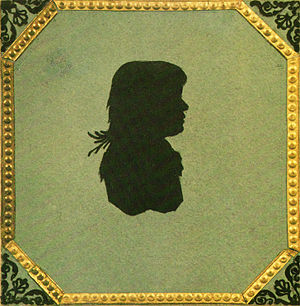
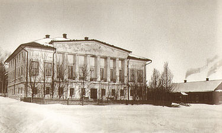
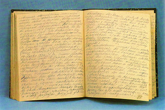
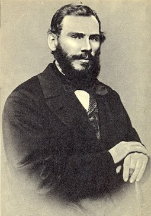
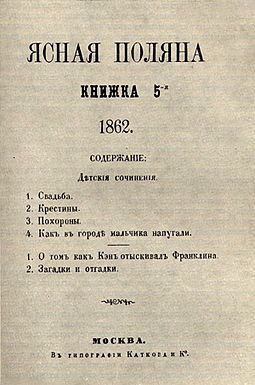
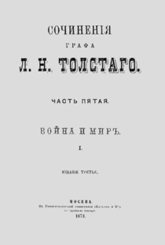
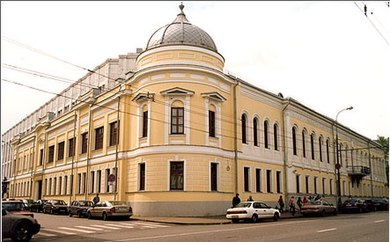

Биография Льва Николавича Толстого
Содержание

Происхождение
Представитель графской ветви дворянского рода Толстых, происходящей от петровского сподвижника П. А. Толстого. Писатель имел обширные родственные связи в мире высшей аристократии. Среди двоюродных братьев и сестёр отца — авантюрист и бретёр Ф. И. Толстой, художник Ф. П. Толстой, красавица М. И. Лопухина, светская дама А. Ф. Закревская, камер-фрейлина А. А. Толстая. Поэт А. К. Толстой приходился ему троюродным братом. Среди двоюродных братьев матери — генерал-лейтенант Д. М. Волконский и богатый эмигрант Н. И. Трубецкой. А. П. Мансуров и А. В. Всеволожский были женаты на двоюродных сёстрах матери. Толстой был связан свойство́м с министрами А. А. Закревским и Л. А. Перовским (женаты на двоюродных сёстрах его родителей), генералами 1812 года Л. И. Депрерадовичем (женат на сестре бабушки) и А. И. Юшковым (деверь одной из тёток), а также с канцлером А. М. Горчаковым (его отец Горчаков Михаил Алексеевич (1768—1831) был двоюродным братом бабушки писателя — Пелагеи Николаевны Горчаковой (1762—1838)). Общим предком Льва Толстого и Пушкина был адмирал Иван Головин, помогавший Петру I создавать русский флот.
Черты деда Ильи Андреевича даны в «Войне и мире» добродушному, непрактичному старому графу Ростову. Сын Ильи Андреевича, Николай Ильич Толстой (1794—1837), был отцом Льва Николаевича. Некоторыми свойствами характера и фактами биографии он был похож на отца Николеньки в «Детстве» и «Отрочестве» и отчасти на Николая Ростова в «Войне и мире». Однако в реальной жизни Николай Ильич отличался от Николая Ростова не только хорошим образованием, но и убеждениями, которые не позволяли служить при Николае I. Участник заграничного похода русской армии против Наполеона, в том числе участвовал в «битве народов» у Лейпцига и побывал в плену у французов, но смог сбежать, после заключения мира вышел в отставку в чине подполковника Павлоградского гусарского полка. Вскоре после отставки вынужден был пойти на чиновничью службу, чтобы не оказаться в долговой тюрьме из-за долгов отца, казанского губернатора, умершего под следствием за служебные злоупотребления. Отрицательный пример отца помог выработать Николаю Ильичу свой жизненный идеал — частная независимая жизнь с семейными радостями[9]. Чтобы привести свои расстроенные дела в порядок, Николай Ильич (как и Николай Ростов), женился на уже не очень молодой княжне (ей было 32 года, что по тем временам считалось весьма почтенным возрастом) Марии Николаевне из рода Волконских в 1822 г., брак был счастливый. У них было пятеро детей: Николай (1823—1860), Сергей (1826—1904), Дмитрий (1827—1856), Лев, Мария (1830—1912).
Дед Толстого по матери, екатерининский генерал князь Николай Сергеевич Волконский, имел некоторое сходство с суровым ригористом — старым князем Болконским в «Войне и мире»[10]. Мать Льва Николаевича, похожая в некоторых отношениях на изображённую в «Войне и мире» княжну Марью, владела замечательным даром рассказчицы.
Детство

Лев Толстой родился 28 августа 1828 года в Крапивенском уезде Тульской губернии, в наследственном имении матери — Ясной Поляне. Был четвёртым ребёнком в семье. Мать умерла в 1830 году от «родовой горячки», как тогда говорили, через полгода после рождения дочери, когда Льву не было ещё и трёх лет[К 3].
Воспитанием осиротевших детей занялась дальняя родственница Т. А. Ергольская. В 1837 году семья переехала в Москву, поселившись на Плющихе, так как старшему сыну надо было готовиться к поступлению в университет. Вскоре внезапно умер отец, Николай Ильич, оставив дела (в том числе некоторые связанные с имуществом семьи тяжбы) в незаконченном состоянии, и трое младших детей снова поселились в Ясной Поляне под наблюдением Ергольской и тётки по отцу, графини А. И. Остен-Сакен, назначенной опекуншей детей. Здесь Лев Николаевич оставался до 1840 года, когда умерла Остен-Сакен, дети переселились в Казань, к новому опекуну — сестре отца П. И. Юшковой.
Дом Юшковых считался одним из самых весёлых в Казани; все члены семьи высоко ценили внешний блеск. «Добрая тётушка моя, — рассказывает Толстой, — чистейшее существо, всегда говорила, что она ничего не желала бы так для меня, как того, чтобы я имел связь с замужнею женщиною»[8].
Льву Николаевичу хотелось блистать в обществе, но ему мешали природная застенчивость и отсутствие внешней привлекательности. Разнообразнейшие, как их определяет сам Толстой, «умствования» о главнейших вопросах нашего бытия — счастье, смерти, Боге, любви, вечности — накладывали отпечаток на его характер в ту эпоху его жизни. Рассказанное им в «Отрочестве» и «Юности», в романе «Воскресение» о стремлениях Иртеньева и Нехлюдова к самоусовершенствованию взято Толстым из истории собственных его аскетических попыток этого времени. Всё это, писал критик С. А. Венгеров, привело к тому, что у Толстого создалась, по выражению из его повести «Отрочество», «привычка к постоянному моральному анализу, уничтожившая свежесть чувства и ясность рассудка»[8]. Приводя примеры самоанализа этого периода, он иронически отзывается о преувеличенности своего отроческого философского самолюбия и величия, и в то же время отмечает непреодолимую неспособность «привыкнуть не стыдиться за каждое своё самое простое слово и движение» при столкновении с реальными людьми, благодетелем которых он себе тогда казался.
Образование
Его образованием первоначально занимался гувернёр-француз Сен-Тома́ (прототип St.-Jérôme в повести «Отрочество»), заменивший собою добродушного немца Ресельмана, которого Толстой изобразил в повести «Детство» под именем Карла Ивановича.
В 1843 году П. И. Юшкова, взяв на себя роль опекунши своих несовершеннолетних племянников (совершеннолетним был только старший — Николай) и племянницы, привезла их в Казань. Вслед за братьями Николаем, Дмитрием и Сергеем Лев решил поступить в Императорский Казанский университет (наиболее славившийся в то время), где работали на математическом факультете Лобачевский, а на Восточном — Ковалевский. 3 октября 1844 года Лев Толстой был зачислен студентом разряда восточной (арабско-турецкой) словесности в качестве своекоштного — оплачивающего своё обучение[11]. На вступительных экзаменах он, в частности, показал отличные результаты по обязательному для поступления «турецко-татарскому языку». По результатам года имел неуспеваемость по соответствующим предметам, не выдержал переходного экзамена и должен был заново пройти программу первого курса.
Во избежание полного повторения курса он перешёл на юридический факультет, где его проблемы с оценками по некоторым предметам продолжились. Переходные майские экзамены 1846 года были сданы удовлетворительно (получил одну пятёрку, три четвёрки и четыре тройки; средний вывод получился три), и Лев Николаевич был переведён на второй курс[12]. На юридическом факультете Лев Толстой пробыл менее двух лет: «Всегда ему было трудно всякое навязанное другими образование, и всему, чему он в жизни выучился, — он выучился сам, вдруг, быстро, усиленным трудом», — пишет С. А. Толстая в своих «Материалах к биографии Л. Н. Толстого»[13]. В 1904 году он вспоминал: «…я первый год … ничего не делал. На второй год я стал заниматься … там был профессор Мейер, который… дал мне работу — сравнение „Наказа“ Екатерины с Esprit des lois »Духом законов"> Монтескьё. … меня эта работа увлекла, я уехал в деревню, стал читать Монтескьё, это чтение открыло мне бесконечные горизонты; я стал читать Руссо и бросил университет, именно потому, что захотел заниматься"[14].
Начало литературной деятельности
В 1841 г. на памятнике родной тёти А. И. Остен-Сакен в Оптиной пустыни было выгравировано первое восьмистишие Л. Н. Толстого[15]. С 11 марта 1847 г. Толстой находился в казанском госпитале, 17 марта он начал вести дневник, где, подражая Бенджамину Франклину, ставил перед собой цели и задачи по самосовершенствованию, отмечал успехи и неудачи в выполнении этих заданий, анализировал свои недостатки и ход мыслей, мотивы своих поступков[16]. Этот дневник с небольшими перерывами он вёл на протяжении всей своей жизни.
Окончив лечение, весной 1847 года Толстой оставил учёбу в университете и уехал в доставшуюся ему по разделу Ясную Поляну[17]; его деятельность там отчасти описана в произведении «Утро помещика»: Толстой пытался наладить по-новому отношения с крестьянами. Его попытка чем-нибудь сгладить чувство вины молодого помещика перед народом относится к тому же году, когда появились повесть «Антон-Горемыка» Д. В. Григоровича и начало «Записок охотника» И. С. Тургенева.
В своём дневнике Толстой сформулировал себе большое количество жизненных правил и целей, но удавалось следовать лишь их незначительной части. Среди удавшихся — серьёзные занятия английским языком, музыкой, юриспруденцией. Кроме того, ни в дневнике, ни в письмах не отразилось начало занятия Толстым педагогикой и благотворительностью, хотя в 1849 году он впервые открыл школу для крестьянских детей. Основным преподавателем был Фока Демидович, крепостной, но и сам Лев Николаевич часто проводил занятия[9].
В середине октября 1848 года Толстой уехал в Москву, поселившись там, где проживали многие его родственники и знакомые, — в районе Арбата. Он снял для проживания дом Ивановой на Сивцевом Вражке. В Москве он собирался начать подготовку к сдаче кандидатских экзаменов, однако занятия так и не были начаты. Вместо этого его привлекла совсем другая сторона жизни — светская. Кроме увлечения светской жизнью, в Москве у Льва Николаевича в зиму 1848—1849 годов впервые появилось увлечение карточной игрой. Но так как он играл весьма азартно и не всегда обдумывая свои ходы — часто проигрывал[18].
Уехав в Петербург в феврале 1849 года, проводил время в кутежах с К. А. Иславиным — дядей своей будущей жены («Любовь моя к Иславину испортила для меня целых 8 месяцев жизни в Петербурге»[19]). Весной Толстой начал сдавать экзамен на кандидата прав; два экзамена, из уголовного права и уголовного судопроизводства, сдал благополучно, однако третий экзамен он сдавать не стал и уехал в деревню[20].
Позднее приезжал в Москву, где часто проводил время в азартных играх, что нередко отрицательно сказывалось на его финансовом положении. В этот период жизни Толстой особенно страстно интересовался музыкой (он сам неплохо играл на рояле и очень ценил любимые произведения в исполнении других). Увлечение музыкой побудило его позднее к написанию «Крейцеровой сонаты»[21].
Любимыми композиторами Толстого были Бах, Гендель и Шопен. Развитию любви Толстого к музыке содействовало и то, что во время поездки в Петербург в 1848 году он встретился в весьма мало подходящей обстановке танцкласса с даровитым, но сбившимся с пути немцем-музыкантом, которого впоследствии описал в повести «Альберт». В 1849 году Лев Николаевич поселил у себя в Ясной Поляне музыканта Рудольфа, с которым играл в четыре руки на рояле. Увлёкшись в то время музыкой, он по нескольку часов в день играл произведения Шумана, Шопена, Моцарта, Мендельсона. В конце 1840-х годов Толстой в соавторстве со своим знакомым Зыбиным сочинил вальс, который в начале 1900-х годов исполнил при композиторе С. И. Танееве, сделавшем нотную запись этого музыкального произведения (единственного сочинённого Толстым)[22]. Вальс звучит в фильме «Отец Сергий», снятом по повести Л. Н. Толстого[23].Много времени уходило также на кутежи, игру и охоту.
Зимой 1850—1851 годов начал писать «Детство». В марте 1851 года написал «Историю вчерашнего дня». Через 4 года после того, как он оставил университет, в Ясную Поляну приехал служивший на Кавказе брат Льва Николаевича Николай, который пригласил младшего брата присоединиться к военной службе на Кавказе. Лев согласился не сразу, пока крупный проигрыш в Москве не ускорил окончательное решение. Биографы писателя отмечают значительное и положительное влияние брата Николая на юного и неопытного в житейских делах Льва. Старший брат в отсутствие родителей был ему другом и наставником[24].
Чтобы расплатиться по долгам, надо было сократить свои расходы до минимума — и весной 1851 года Толстой торопливо уехал из Москвы на Кавказ без определённой цели. Вскоре он решил поступить на военную службу, но для этого ему недоставало необходимых документов, оставленных в Москве, в ожидании которых Толстой прожил около пяти месяцев в Пятигорске, в простой избе. Значительную часть времени он проводил на охоте, в обществе казака Епишки, прототипа одного из героев повести «Казаки», фигурирующего там под именем Ерошки[8].

К 1851 году относится известная запись в дневнике Толстого с его переживаниями о гомосексуальности: «… В мужчин я очень часто влюблялся, 1 любовью были два Пушкина, потом 2-й — Сабуров, потом 3-ей — Зыбин и Дьяков, 4 — Оболенский, Блосфельд, Иславин, ещё Готье и многие другие… Я влюблялся в мужчин, прежде чем имел понятие о возможности педрастии; но и узнавши, никогда мысль о возможности соития не приходила мне в голову… Все люди, которых я любил, чувствовали это, и я замечал, им тяжело было смотреть на меня… Было в этом чувстве и сладострастие, но зачем оно сюда попало, решить невозможно; потому что, как я говорил, никогда воображение не рисовало мне любрические картины, напротив, я имею страшное отвращение.»[25].
Осенью 1851 года Толстой, сдав в Тифлисе экзамен, поступил юнкером в 4-ю батарею 20-й артиллерийской бригады, стоявшей в казачьей станице Старогладовской на берегу Терека, под Кизляром. В этой батарее слежил его брат Николай. С некоторыми изменениями подробностей она изображена в повести «Казаки». Повесть воспроизводит картину внутренней жизни бежавшего от московской жизни молодого барина. В казачьей станице Толстой вновь стал писать и в июле 1852 года отослал в редакцию наиболее популярного в то время журнала «Современник» первую часть будущей автобиографической трилогии — «Детство»[8], подписанную лишь инициалами «Л. Н. Т.». При отправлении рукописи в журнал Лев Толстой приложил письмо, в котором говорилось: «…я с нетерпением ожидаю вашего приговора. Он или поощрит меня к продолжению любимых занятий, или заставит сжечь всё начатое»[26].
Получив рукопись «Детства», редактор «Современника» Н. А. Некрасов сразу признал её литературную ценность и написал автору любезное письмо, подействовавшее на него весьма ободряющим образом. В письме И. С. Тургеневу Некрасов отметил: «Это талант новый и, кажется, надёжный»[27]. Рукопись пока ещё неизвестного автора была опубликована уже в сентябре того же года. Между тем начинающий и вдохновлённый автор принялся за продолжение тетралогии «Четыре эпохи развития», последняя часть которой — «Молодость» — так и не состоялась. Он обдумывал фабулу «Утра помещика» (законченный рассказ представлял собой лишь фрагмент «Романа русского помещика»), «Набега», «Казаков». Напечатанное в «Современнике» 18 сентября 1852 года «Детство» имело чрезвычайный успех; после публикации автора сразу стали причислять к корифеям молодой литературной школы наряду с пользовавшимися уже тогда громкой литературною известностью И. С. Тургеневым, Гончаровым, Д. В. Григоровичем, Островским. Критики Аполлон Григорьев, Анненков, Дружинин, Чернышевский оценили глубину психологического анализа, серьёзность авторских намерений и яркую выпуклость реализма[8].
Сравнительно по́зднее начало поприща очень характерно для Толстого: он никогда не считал себя профессиональным литератором, понимая профессиональность не в смысле профессии, дающей средства к жизни, а в смысле преобладания литературных интересов. Он не принимал близко к сердцу интересы литературных партий, неохотно беседовал о литературе, предпочитая разговоры о вопросах веры, морали, общественных отношений[8].
Военная служба


Будучи фейерверкером той же батареи, Лев Николаевич оставался два года на Кавказе, где участвовал во многих стычках с горцами, возглавляемыми Шамилем, и подвергался опасностям военной кавказской жизни. Там он проявляет смелость, бесстрашие[28]. В начале 1852 года особенно отличился Толстой в сражении при атаке неприятеля на реке Мичике. В этом сражении он едва не был убит ядром, ударившим в колесо пушки, которую он наводил[29]. Он имел право на Георгиевский крест, однако в соответствии со своими убеждениями «уступил» его сослуживцу-солдату, посчитав, что существенное облегчение условий службы сослуживца стоит выше личного тщеславия. Здесь же он выучился кумыкскому языку[30]. Позже в своём дневнике Толстой называет кавказский период «мучительным и хорошим временем», отмечая, что никогда, ни прежде, ни после, не доходил до такой высоты мысли. «И все, что я нашёл тогда, навсегда останется моим убеждением», — писал он впоследствии[31]. С началом Крымской войны Толстой в конце 1853 года перевёлся в Дунайскую армию с назначением в 12-ю артиллерийскую бригаду, участвовал в сражении при Ольтенице и в осаде Силистрии, а с ноября 1854 года по конец августа 1855 года был в Севастополе[8][32].
Долгое время жил на 4-м бастионе, часто подвергавшемся нападениям, командовал батареей в сражении на Чёрной речке, был при бомбардировке во время штурма Малахова кургана. Толстой, несмотря на все житейские тяготы и ужасы осады, в это время написал рассказ «Рубка леса», в котором отразились кавказские впечатления, и первый из трёх «Севастопольских рассказов» — «Севастополь в декабре 1854 года». Этот рассказ он отправил в «Современник». Он был быстро издан и с интересом прочитан всей Россией, произведя потрясающее впечатление картиной ужасов, выпавших на долю защитников Севастополя. Рассказ был замечен российским императором Александром II[33][К 4]; он велел беречь даровитого офицера[8].
Ещё при жизни императора Николая I Толстой предполагал издавать вместе с офицерами-артиллеристами «дешёвый и популярный» журнал «Военный листок», однако проект журнала Толстому осуществить не удалось: «На проект мой Государь император всемилостивейше изволил разрешить печатать статьи наши в „Инвалиде“», — горько иронизировал Толстой по этому поводу.За нахождение во время бомбардирования на Язоновском редуте четвёртого бастиона, хладнокровие и распорядительность.— Из представления к ордену Святой Анны 4-й ст.За оборону Севастополя Толстой был награждён орденом Святой Анны 4-й степени с надписью «За храбрость», медалями «За защиту Севастополя 1854—1855» и «В память войны 1853—1856 годов» Впоследствии его наградили двумя[35] медалями «В память 50-летия защиты Севастополя»: серебряной как участника обороны Севастополя и бронзовой как автора «Севастопольских рассказов»[36].
Толстой, пользуясь репутацией храброго офицера и окружённый блеском известности, имел все шансы на карьеру. Тем не менее его карьера оказалась испорченной написанием нескольких сатирических песен, стилизованных под солдатские. Одна из этих песен была посвящена неудаче во время сражения у речки Чёрной 4 (16) августа 1855 года, когда генерал Реад, неправильно поняв приказание главнокомандующего, атаковал Федюхины высоты. Песня под названием «Как четвёртого числа, нас нелёгкая несла горы отбирать», задевавшая целый ряд важных генералов, имела огромный успех. За неё Льву Николаевичу пришлось держать ответ перед помощником начальника штаба А. А. Якимахом. Сразу после штурма 27 августа (8 сентября) Толстой был послан курьером в Петербург. Там он был в ноябре прикомандирован к Санкт-Петербургскому ракетному заведению, где и числился до конца службы. 26 марта 1856 года был произведён в чин поручика. Тогда же закончил «Севастополь в мае 1855 г.» и написал «Севастополь в августе 1855 г.», опубликованный в первом номере «Современника» за 1856 год уже с полной подписью автора. «Севастопольские рассказы» окончательно укрепили его репутацию как представителя нового литературного поколения, и в ноябре 1856 года писатель навсегда оставляет военную службу[8][37] в звании поручика.
В 1856—1858 годах Толстой задумался о женитьбе. Около полугода длился его роман с Валерией Арсеньевой, закончившийся в начале 1857 года. Дольше всех после неё Толстой состоял в отношениях с Е. Ф. Тютчевой (до сентября 1858 года)[38].
Путешествия по Европе
В Петербурге молодого писателя радушно встретили в великосветских салонах и в литературных кружках. Наиболее близко он сдружился с И. С. Тургеневым, с которым они какое-то время жили на одной квартире. Тургенев представил его в кружке «Современника», после чего у Толстого установились дружеские отношения с такими известными литераторами, как Н. А. Некрасов, И. С. Гончаров, И. И. Панаев, Д. В. Григорович, А. В. Дружинин, В. А. Соллогуб[8].
В это время были написаны «Метель», «Два гусара», закончены «Севастополь в августе» и «Юность», продолжено написание будущих «Казаков»[20].Однако весёлая и насыщенная жизнь оставила горький осадок в душе Толстого, в это же время у него начался сильный разлад с близким ему кружком писателей. В результате «люди ему опротивели, и сам он себе опротивел» — и в начале 1857 года Толстой без всякого сожаления оставил Петербург и отправился в путешествие[8].
В первой заграничной поездке он посетил Париж, где его ужаснул культ Наполеона I («Обоготворение злодея, ужасно»), в то же время он посещал балы, музеи, восхищался «чувством социальной свободы». Однако присутствие на гильотинировании произвело столь тяжкое впечатление, что Толстой покинул Париж и отправился в места, связанные с французским писателем и мыслителем Ж.-Ж. Руссо — на Женевское озеро[39]. Весной 1857 года И. С. Тургенев следующим образом описывал свои встречи со Львом Толстым в Париже после внезапного отъезда того из Петербурга: «Действительно, Париж вовсе не приходится в лад его духовному строю; странный он человек, я таких не встречал и не совсем понимаю. Смесь поэта, кальвиниста, фанатика, барича — что-то напоминающее Руссо, но честнее Руссо — высоконравственное и в то же время несимпатическое существо».— И. С. Тургенев, Полн. собр. соч. и писем. Письма, т. III, с. 52.
Поездки по Западной Европе — Германии, Франции, Англии, Швейцарии, Италии (в 1857 и 1860—1861 годах) произвели на него скорее отрицательное впечатление. Своё разочарование в европейском образе жизни он высказал в рассказе «Люцерн». Разочарование Толстого вызвал глубокий контраст между богатством и бедностью, который он сумел рассмотреть сквозь великолепный внешний покров европейской культуры[8].
Лев Николаевич пишет повесть «Альберт». Одновременно друзья не перестают удивляться его чудачествам: в своём письме И. С. Тургеневу осенью 1857 года П. В. Анненков рассказывал проект Толстого по засадке всей России лесами, а в своём письме В. П. Боткину Лев Толстой сообщал, как остался очень рад тому, что не сделался только литератором вопреки совету Тургенева. Однако в промежутке между первой и второй поездками писатель продолжил работу над «Казаками», написал рассказ «Три смерти» и роман «Семейное счастие».
Последний роман был им опубликован в «Русском вестнике» Михаила Каткова. Сотрудничество Толстого с журналом «Современник», продолжавшееся с 1852 года, завершилось в 1859 году. В этом же году Толстой принял участие в организации Литературного фонда. Но жизнь его не исчерпывалась литературными интересами: 22 декабря 1858 года он едва не погиб на медвежьей охоте[40].Приблизительно в это же время у него завязался роман с крестьянкой Аксиньей Базыкиной[41][42], зреют планы женитьбы.

В следующей поездке его интересовали, в основном, народное образование и учреждения, имеющие целью поднятие образовательного уровня рабочего населения. Вопросы народного образования он пристально изучал в Германии и Франции и теоретически, и практически — в беседах со специалистами. Из выдающихся людей Германии его больше всех заинтересовал Бертольд Ауэрбах как автор посвящённых народному быту «Шварцвальдских рассказов» и как издатель народных календарей. Толстой нанёс ему визит и постарался с ним сблизиться. Кроме того, он встретился также с немецким педагогом Дистервегом. Во время пребывания в Брюсселе Толстой познакомился с Прудоном и Лелевелем. В Лондоне посетил А. И. Герцена, был на лекции Чарльза Диккенса[8].
Серьёзному настроению Толстого во время второго путешествия по югу Франции содействовало ещё то, что почти на его руках умер от туберкулёза его любимый брат Николай. Смерть брата произвела на Толстого огромное впечатление[8].
Постепенно критика лет на 10—12 охладевает к Льву Толстому, до самого появления «Войны и мира»[8], и сам он не стремился к сближению с литераторами, делая исключение лишь для Афанасия Фета. Одна из причин этого отчуждения состояла в размолвке Льва Толстого с Тургеневым, которая произошла в то время, когда оба прозаика находились в гостях у Фета в имении Степановка в мае 1861 года. Ссора едва не закончилась дуэлью и испортила отношения между писателями на долгие 17 лет[43].
Лечение в башкирском кочевье Каралык
В мае 1862 года Лев Николаевич, страдающий депрессией[44], по рекомендации врачей отправился в башкирский хутор Каралык, Самарская губерния, чтобы лечиться новым и модным в то время методом кумысолечения. Изначально он собирался находиться в кумысолечебнице Постникова недалеко от Самары, но, узнав, что в то же время должно было приехать множество высокопоставленных чиновников (светское общество, которое молодой граф терпеть не мог), отправился в башкирское кочевье Каралык, на реке Каралык, в 130 верстах от Самары. Там Толстой жил в башкирской кибитке (юрте), питался бараниной, принимал солнечные ванны, пил кумыс, чай, а также развлекался с башкирами игрой в шашки. В первый раз он пробыл там полтора месяца.
В 1871 году, когда он уже написал «Войну и мир», он вновь приехал туда из-за ухудшения здоровья совместно с шурином Степаном Берсом[45]. О своих впечатлениях он писал так: «Тоска и равнодушие прошли, чувствую себя приходящим в скифское состояние, и всё интересно и ново… Ново и интересно многое: и башкиры, от которых Геродотом пахнет, и русские мужики, и деревни, особенно прелестные по простоте и доброте народа»[46].
Очарованный Каралыком, Толстой купил в этих местах имение, и уже лето следующего, 1872 года провёл вместе со всей семьёй в нём[46][45]. Позднее в этом имении Толстой организовал конный завод, пытаясь скрестить английских рысаков и степных кобыл и вывести быструю и выносливую породу для кавалерии. На протяжении десяти лет завод приносил семье Толстого значительные убытки. Во время очередной поездки Толстой устроил для башкиров конные скачки на 50 вёрст и силовые состязания, в которых лично принимал участие[47].
Педагогическая деятельность
 В 1859 году ещё до освобождения крестьян Толстой деятельно занялся устройством школ в своей Ясной Поляне и во всём Крапивенском уезде[48].Яснополянская школа принадлежала к числу оригинальных педагогических экспериментов: в эпоху преклонения перед немецкой педагогической школой Толстой решительно восстал против всякой регламентации и дисциплины в школе. По его мысли всё в преподавании должно быть индивидуально — и учитель, и ученик, и их взаимные отношения. В Яснополянской школе дети сидели, кто где хотел, кто сколько хотел и кто как хотел. Определённой программы преподавания не было. Единственная задача учителя заключалась в том, чтобы заинтересовать класс. Занятия шли успешно. Их вёл сам Толстой при помощи нескольких постоянных учителей и нескольких случайных, из ближайших знакомых и приезжих[8].
С 1862 года Толстой стал издавать педагогический журнал «Ясная Поляна», где главным сотрудником являлся он сам. Не испытывая призвания издателя, Толстой сумел выпустить только 12 номеров журнала, последние из которых появились с отставанием в 1863 году[49]. Помимо статей теоретических, он написал также ряд рассказов, басен и переложений, адаптированных для начальной школы. Соединённые вместе, педагогические статьи Толстого составили целый том собрания его сочинений. В своё время они остались незамеченными. На социологическую основу идей Толстого об образовании, на то, что Толстой в образованности, науке, искусстве и успехах техники видел только облегчённые и усовершенствованные способы эксплуатации народа высшими классами, никто не обратил внимания. Мало того: из нападок Толстого на европейскую образованность и «прогресс» многие вывели заключение, что Толстой — «консерватор»[8].
Вскоре Толстой оставил занятия педагогикой. Женитьба, рождение собственных детей, планы, связанные с написанием романа «Война и мир», на десять лет отодвинули его педагогические мероприятия. Лишь в начале 1870-х он приступил к созданию собственной «Азбуки» и опубликовал её в 1872 году, а затем выпустил «Новую азбуку» и серию из четырёх «Русских книг для чтения»[50], одобренных в результате долгих мытарств Министерством народного просвещения в качестве пособий для начальных учебных заведений. В начале 1870-х годов учебные занятия в яснополянской школе вновь восстановились на непродолжительное время[51][52].
Опыт яснополянской школы впоследствии пригодился некоторым отечественным педагогам. Так С. Т. Шацкий, создавая в 1911 году собственную школу-колонию «Бодрая жизнь», отталкивался от экспериментов Льва Толстого в области педагогики сотрудничества[52].
Общественная деятельность в 1860-х годах
По возвращении из Европы в мае 1861 года Л. Н. Толстому предложили стать мировым посредником по 4-му участку Крапивенского уезда Тульской губернии. В отличие от тех, кто смотрел на народ как на младшего брата, которого надо поднять до себя, Толстой думал наоборот, что народ бесконечно выше культурных классов и что господам надо заимствовать высоты духа у мужиков, поэтому он, приняв должность посредника, активно защищал земельные интересы крестьян, часто нарушая царские указы. «Посредничество интересно и увлекательно, но нехорошо то, что всё дворянство возненавидело меня всеми силами души и суют мне des bâtons dans les roues (фр. палки в колёса) со всех сторон»[53]. Работа посредником расширила круг наблюдений писателя над жизнью крестьян, дав ему материал для художественного творчества.
16 июля 1866 года Толстой выступил на военно-полевом суде в качестве защитника Василя Шабунина,[54] ротного писаря стоявшего недалеко от Ясной Поляны Московского пехотного полка. Шабунин ударил офицера, который приказал наказать его розгами за нахождение в нетрезвом виде. Толстой доказывал невменяемость Шабунина, но суд признал его виновным и приговорил к смертной казни. Шабунин был расстрелян. Этот эпизод произвёл большое впечатление на Толстого, так как он в этом страшном явлении видел беспощадную силу, которую представляло собою государство, основанное на насилии[55]. По этому поводу он писал своему другу публицисту П. И. Бирюкову:
«Случай этот имел на всю мою жизнь гораздо более влияния, чем все кажущиеся более важными события жизни: потеря или поправление состояния, успехи или неуспехи в литературе, даже потеря близких людей».
Расцвет творчества
В течение первых 12 лет после женитьбы он создал «Войну и мир» и «Анну Каренину». На рубеже этой второй эпохи литературной жизни Толстого стоят задуманные ещё в 1852 году и законченные в 1861—1862 годах «Казаки», первое из произведений, в которых наиболее реализовался талант зрелого Толстого.Главный интерес творчества для Толстого проявился «в „истории“ характеров, в их непрерывном и сложном движении, развитии». Его целью было показать способность личности к нравственному росту, совершенствованию, противостоянию среде в опоре на силу собственной души[57].

«Война и мир»
Выходу «Войны и мира» предшествовала работа над романом «Декабристы» (1860—1861), к которому автор неоднократно возвращался, но который остался незаконченным. А на долю «Войны и мира» выпал небывалый успех. Отрывок из романа под названием «1805 год» появился в «Русском вестнике» 1865 года; в 1868 году вышли три его части, за которыми вскоре последовали остальные две[К 5]. Первые четыре тома «Войны и мира» быстро разошлись, и понадобилось второе издание, которое и было выпущено в октябре 1868 года. Пятый и шестой тома романа вышли в одном издании, отпечатанном уже увеличенным тиражом[58].
«Война и мир» стала уникальным явлением как в русской, так и зарубежной литературе. Это произведение вобрало в себя всю глубину и сокровенность психологического романа с размахом и многофигурностью эпической фрески. Писатель, по словам В. Я. Лакшина, обратился «к особому состоянию народного сознания в героическую пору 1812 года, когда люди из разных слоёв населения объединились в сопротивлении иноземному нашествию», что, в свою очередь, «создало почву для эпопеи»[6].
Национальные русские черты автор показал в «скрытой теплоте патриотизма», в отвращении к показной героике, в спокойной вере в справедливость, в скромном достоинстве и мужестве простых солдат. Он изобразил войну России с наполеоновскими войсками как всенародную войну. Эпический стиль произведения передаётся через полноту и пластичность изображения, разветвлённость и перекрещение судеб, несравненные картины русской природы.В романе Толстого широко представлены самые разные слои общества, от императоров и королей до солдат, все возрасты и все темпераменты на пространстве царствования Александра I.
Толстой был доволен собственным произведением, однако уже в январе 1871 года он отправил А. А. Фету письмо: «Как я счастлив… что писать дребедени многословной вроде „Войны“ я больше никогда не стану». Однако едва ли Толстой перечёркивал важность своих предшествующих творений. На вопрос Токутоми Рока в 1906 году, какое своё произведение Толстой любит больше всего, писатель ответил: «Роман „Война и мир“».
«Анна Каренина»
Не менее драматичным и серьёзным произведением явился роман о трагической любви «Анна Каренина» (1873—1876 годы). В отличие от предыдущей работы, в нём нет места бесконечно счастливому упоению блаженством бытия. В почти автобиографическом романе Левина и Кити ещё присутствуют радостные переживания, но в изображении семейной жизни Долли уже больше горечи, а в несчастном завершении любви Анны Карениной и Вронского столько тревоги душевной жизни, что этот роман является по существу переходом к третьему периоду литературной деятельности Толстого, драматическому[8].
В нём меньше простоты и ясности душевных движений, свойственных героям «Войны и мира», больше обострённой чуткости, внутренней насторожённости и тревоги. Характеры главных героев более сложны и утончённы. Автор стремился показать тончайшие нюансы любви, разочарования, ревности, отчаяния, духовного просветления.Проблематика данного произведения непосредственно подводила Толстого к идейному перелому конца 1870-х годов.
Другие произведения

В марте 1879 года, в Москве, Лев Толстой познакомился с Василием Петровичем Щеголёнком, и в том же году по его приглашению тот приехал в Ясную Поляну, где пробыл около месяца-полутора. Щеголёнок поведал Толстому множество народных сказаний, былин и легенд, из которых более двадцати были записаны Толстым (эти записи печатались в т. XLVIII Юбилейного издания сочинений Толстого), а сюжеты некоторых Толстой, если и не записал на бумагу, то запомнил: шесть написанных Толстым произведений имеют источником рассказы Щеголёнка (1881 — «Чем люди живы», 1885 — «Два старика» и «Три старца», 1905 — «Корней Васильев» и «Молитва», 1907 — «Старик в церкви»). Помимо этого, Толстой усердно записал много поговорок, пословиц, отдельных выражений и слов, рассказанных Щеголёнком[61].Новое миросозерцание Толстого наиболее полно выразилось в его произведениях «Исповедь» (1879—1880, опубликована в 1884) и «В чём моя вера?» (1882—1884). Теме христианского начала любви, лишённой всякого своекорыстия и возвышающейся над любовью чувственной в борьбе с плотью, Толстой посвятил повесть «Крейцерова соната» (1887—1889, опубликована в 1891) и «Дьявол» (1889—1890, опубликована в 1911). В 1890-е годы, пытаясь теоретически обосновать свои взгляды на искусство, он пишет трактат «Что такое искусство?» (1897—1898). Но главной художественной работой тех лет стал его роман «Воскресение» (1889—1899), сюжет которого был основан на подлинном судебном деле. Резкая критика церковных обрядов в данном произведении стала одной из причин отлучения Толстого Святейшим синодом от православной церкви в 1901 году. Наивысшими достижениями начала 1900-х годов стала повесть «Хаджи-Мурат» и драма «Живой труп». В «Хаджи-Мурате» в равной мере обличён деспотизм Шамиля и Николая I. В повести Толстой прославил мужество борьбы, силу сопротивления и любви к жизни. Пьеса «Живой труп» стала свидетельством новых художественных исканий Толстого, объективно близких чеховской драме[6].
Новое миросозерцание Толстого наиболее полно выразилось в его произведениях «Исповедь» (1879—1880, опубликована в 1884) и «В чём моя вера?» (1882—1884). Теме христианского начала любви, лишённой всякого своекорыстия и возвышающейся над любовью чувственной в борьбе с плотью, Толстой посвятил повесть «Крейцерова соната» (1887—1889, опубликована в 1891) и «Дьявол» (1889—1890, опубликована в 1911). В 1890-е годы, пытаясь теоретически обосновать свои взгляды на искусство, он пишет трактат «Что такое искусство?» (1897—1898). Но главной художественной работой тех лет стал его роман «Воскресение» (1889—1899), сюжет которого был основан на подлинном судебном деле. Резкая критика церковных обрядов в данном произведении стала одной из причин отлучения Толстого Святейшим синодом от православной церкви в 1901 году. Наивысшими достижениями начала 1900-х годов стала повесть «Хаджи-Мурат» и драма «Живой труп». В «Хаджи-Мурате» в равной мере обличён деспотизм Шамиля и Николая I. В повести Толстой прославил мужество борьбы, силу сопротивления и любви к жизни. Пьеса «Живой труп» стала свидетельством новых художественных исканий Толстого, объективно близких чеховской драме[6].
Литературная критика произведений Шекспира
В своём критическом очерке «О Шекспире и о драме»[62] на основании детального разбора некоторых наиболее популярных произведений Шекспира, в частности, «Короля Лира», «Отелло», «Фальстафа», «Гамлета» и др., Толстой подверг резкой критике способности Шекспира как драматурга. На представлении «Гамлета» он испытывал «особенное страдание» за это «фальшивое подобие произведений искусства».
Участие в московской переписи
Л. Н. Толстой принял участие в московской переписи 1882 года[63]. Он писал об этом так: «Я предлагал воспользоваться переписью для того, чтобы узнать нищету в Москве и помочь ей делом и деньгами, и сделать так, чтобы бедных не было в Москве».
Л. Н. Толстой принял участие в московской переписи 1882 года[63]. Он писал об этом так: «Я предлагал воспользоваться переписью для того, чтобы узнать нищету в Москве и помочь ей делом и деньгами, и сделать так, чтобы бедных не было в Москве».
Несмотря на декларированные Толстым благие цели переписи, население с подозрением относилось к этому мероприятию. По этому поводу Толстой писал: «Когда нам объяснили, что народ уже узнал об обходе квартир и уходит, мы попросили хозяина запереть ворота, а сами ходили на двор уговаривать уходивших людей»[66]. Лев Николаевич надеялся вызвать в богатых сочувствие к городской нищете, собрать деньги, набрать людей, желающих содействовать этому делу и вместе с переписью пройти все притоны бедности. Кроме выполнения обязанностей переписчика, писатель хотел войти в общение с несчастными, узнать подробности их нужды и помочь им деньгами и работой, высылкой из Москвы, помещением детей в школы, стариков и старух в приюты и богадельни[67].
В Москве
Как пишет москвовед Александр Васькин, Лев Толстой приезжал в Москву более ста пятидесяти раз.
Общие впечатления, вынесенные им от знакомства с московской жизнью, как правило, были негативными, а отзывы о социальной обстановке в городе — резко критическими. Так, 5 октября 1881 года он записал в своём дневнике:
«Вонь, камни, роскошь, нищета. Разврат. Собрались злодеи, ограбившие народ, набрали солдат, судей, чтобы оберегать их оргию. И пируют. Народу больше нечего делать, как, пользуясь страстями этих людей, выманивать у них назад награбленное».
Сохранились многие здания, связанные с жизнью и творчеством писателя, на улицах Плющиха, Сивцев Вражек, Воздвиженка, Тверская, Нижний Кисловский переулок, Смоленский бульвар, Земледельческий переулок, Вознесенский переулок и, наконец, Долгохамовнический переулок (совр. улица Льва Толстого) и другие. Часто бывал писатель и в Кремле, где жила семья его жены — Берсы. Толстой любил ходить по Москве пешком, причём даже зимой. Последний раз писатель приезжал в Москву в 1909 году[68].
Кроме того, по улице Воздвиженка, 9, находился дом деда Льва Николаевича — князя Николая Сергеевича Волконского, купленный им в 1816 году у Прасковьи Васильевны Муравьёвой-Апостол (дочери генерал-поручика В. В. Грушецкого[69], который и построил этот дом[70], жены писателя сенатора И. М. Муравьёв-Апостола, матери троих братьев декабристов Муравьёвых-Апостолов). Князь Волконский владел домом на протяжении пяти лет, отчего дом также известен в Москве как главный дом усадьбы князей Волконских или как «дом Болконских». Дом описан Л. Н. Толстым как дом Пьера Безухова. Льву Николаевичу этот дом был хорошо знаком — он частенько бывал здесь молодым на балах, где ухаживал за прелестной княжной Прасковьей Щербатовой: «Со скукой и сонливостью поехал к Рюминым, и вдруг окатило меня. П[расковья] Щ[ербатова] прелесть. Свежее этого не было давно». Чертами красавицы Прасковьи он наделил в «Анне Карениной» Кити Щербацкую[71].
В 1886, 1888 и 1889 годы Л. Н. Толстой трижды пешком ходил из Москвы в Ясную Поляну. В первом таком путешествии его спутниками были политический деятель Михаил Стахович и Николай Ге (сын художника Н. Н. Ге). Во втором — также Николай Ге, а со второй половины пути (от Серпухова) присоединились А. Н. Дунаев и С. Д. Сытин (брат издателя). Во время третьего путешествии Льва Николаевича сопровождал новый друг и единомышленник 25-летний педагог Евгений Попов[72].
Духовный кризис и проповедничество
В своей работе «Исповедь» Толстой писал, что с конца 1870-х годов он стал нередко мучиться неразрешимыми вопросами: «Ну, хорошо, у тебя будет 6000 десятин в Самарской губернии — 300 голов лошадей, а потом?»; в сфере литературной: «Ну, хорошо, ты будешь славнее Гоголя, Пушкина, Шекспира, Мольера, всех писателей в мире, — ну и что ж!». Начиная думать о воспитании детей, он спрашивал себя: «зачем?»; рассуждая «о том, как народ может достигнуть благосостояния», он «вдруг говорил себе: а мне что за дело?» В общем, он «почувствовал, что то, на чём он стоял, подломилось, что того, чем он жил, уже нет». Естественным результатом была мысль о самоубийстве:
«Я, счастливый человек, прятал от себя шнурок, чтобы не повеситься на перекладине между шкапами в своей комнате, где я каждый день бывал один, раздеваясь, и перестал ходить с ружьём на охоту, чтобы не соблазниться слишком лёгким способом избавления себя от жизни. Я сам не знал, чего я хочу: я боялся жизни, стремился прочь от неё и, между тем, чего-то ещё надеялся от неё».
Чтобы найти ответ на постоянно волнующие его вопросы и сомнения, Толстой прежде всего взялся за исследование богословия и написал и издал в 1891 году в Женеве своё «Исследование догматического богословия», в котором подверг критике «Православно-догматическое богословие» митрополита Макария (Булгакова)[74]. Вёл беседы со священниками и монахами, ходил к старцам в Оптину Пустынь (в 1877, 1881 и 1890 годах), читал богословские трактаты, беседовал со старцем Амвросием[75], К. Н. Леонтьевым, горячим противником учения Толстого. В письме к Т. И. Филиппову от 14 марта 1890 г. Леонтьев сообщал, что во время этого разговора он сказал Толстому: «Жаль, Лев Николаевич, что у меня мало фанатизма. А надо бы написать в Петербург, где у меня есть связи, чтобы вас сослали в Томск и чтобы не позволили ни графине, ни дочерям вашим даже и посещать вас, и чтобы денег вам высылали мало. А то вы положительно вредны». На это Лев Николаевич с жаром воскликнул: «Голубчик, Константин Николаевич! Напишите, ради Бога, чтоб меня сослали. Это моя мечта. Я делаю всё возможное, чтобы компрометировать себя в глазах правительства, и всё сходит мне с рук. Прошу вас, напишите»[76]. Чтобы в подлиннике изучить первоисточники христианского учения, изучал древнегреческий и древнееврейский языки (в изучении последнего ему помогал московский раввин Шломо Минор[77]). Вместе с тем он присматривался к старообрядцам, сблизился с крестьянином проповедником Василием Сютаевым, беседовал с молоканами, штундистами. Лев Николаевич искал смысл жизни в изучении философии, в знакомстве с результатами точных наук. Он старался как можно больше всего упростить, жить жизнью, близкой к природе и земледельческому быту.

Постепенно Толстой отказывается от прихотей и удобств богатой жизни (опрощение), много занимается физическим трудом, одевается в простейшую одежду, становится вегетарианцем, отдаёт семье всё своё крупное состояние, отказывается от прав литературной собственности. На почве искреннего стремления к нравственному усовершенствованию создаётся третий период литературной деятельности Толстого, отличительною чертой которого является отрицание всех установившихся форм государственной, общественной и религиозной жизни[8].
В начале царствования Александра III Толстой письменно обратился к императору с просьбой о помиловании цареубийц в духе евангельского всепрощения[78]. С сентября 1882 за ним устанавливается негласный надзор для выяснения отношений с сектантами; в сентябре 1883 он отказывается от исполнения обязанностей присяжного заседателя, мотивируя отказ несовместимостью со своим религиозным мировоззрением[79]. Тогда же он получил запрет на публичное выступление в связи со смертью Тургенева. Постепенно идеи толстовства начинают проникать в общество. В начале 1885 года в России происходит прецедент отказа от военной службы со ссылкой на религиозные убеждения Толстого. Значительная часть взглядов Толстого не могла получить открытого выражения в России и в полном виде была изложена только в заграничных изданиях его религиозно-социальных трактатов[8].
К 1880-м годам относится появление в окружении Толстого Владимира Григорьевича Черткова, который оказал значительное влияние на писателя и его семью и которого называют самой влиятельной фигурой в окружении Толстого с середины 80-х годов до смерти писателя[80]. После знакомства в октябре 1883 года Чертков быстро стал единомышленником и помощником Толстого[81], а с 1886 года ввёл в близкое окружение писателя свою супругу Анну Дитерихс-Черткову[82]. Чертков и Толстой вели обширную переписку, составляющую пять томов собрания сочинений писателя[83]. В 1884 году Владимир Григорьевич в сотрудничестве с издателем И. Д. Сытиным организовал издательство «Посредник», целью которого было издание дешёвых, доступных простому народу книг, в которых публиковалась беллетристика и публицистика морально-этического характера[84]. Чертков был единственным человеком, которого Толстой допускал к себе практически в любое время и без приглашения. После организации издательства Чертков ввёл в практику редактирование текстов писателя, с чем он неожиданно легко соглашался. В частности, Чертковым вносились правки в текст «Кавказского пленника»[85]. Одной из его идей стало переписывание текстов старых произведений Толстого с оставлением пробелов и широких полей, чтобы он мог вносить новые правки. Лев Николаевич писал: «Если бы Черткова не было, его надо было бы придумать»[86]. В мае 1885 года Владимир Григорьевич с матерью поехал в Англию и занимался изданием на английском языке запрещённых в России произведений Толстого: в первой книге печатаются «Исповедь», «В чём моя вера?» и «Краткое изложение Евангелия»[87]. Влияние Черткова дошло до того, что в июле 1885 года он в письмах предлагал Толстому бросить семью, объясняя это неприятием родными философии изменившегося Толстого. Всё это приводило к серьёзным семейным конфликтам между Толстым и его женой[88].
В отношении к художественным произведениям Толстого, написанным в этот период, не было единодушия. Так, в длинном ряде небольших повестей и легенд, предназначенных преимущественно для народного чтения («Чем люди живы» и др.), Толстой, по мнению своих безусловных поклонников, достиг вершины художественной силы. В то же время, по мнению людей, упрекающих Толстого в том, что он из художника превратился в проповедника, эти написанные с определённою целью художественные поучения были грубо-тенденциозны. Высокая и страшная правда «Смерти Ивана Ильича», по мнению поклонников, ставящая это произведение в один ряд с главными произведениями гения Толстого, по мнению других, преднамеренно жёстка, в ней резко подчёркивалось бездушие высших слоёв общества, чтобы показать нравственное превосходство простого «кухонного мужика» Герасима. Противоположные отзывы вызвала и «Крейцерова соната» (написана в 1887—1889, издана в 1890 году) — анализ супружеских отношений заставил забыть об удивительной яркости и страстности, с которою написана эта повесть. Произведение было запрещено цензурой, его удалось напечатать благодаря усилиям С. А. Толстой, которая добилась свидания с Александром III. В результате повесть была опубликована в урезанном цензурой виде в Собрании сочинений Толстого по личному разрешению царя. Александр III остался доволен повестью, но царица была шокирована[89]. Зато народная драма «Власть тьмы», по мнению поклонников Толстого, стала великим проявлением его художественной силы: в тесные рамки этнографического воспроизведения русского крестьянского быта Толстой сумел вместить столько общечеловеческих черт, что драма с колоссальным успехом обошла все сцены мира[8]

Во время голода 1891—1892 годов Толстой организовывал в Рязанской губернии учреждения помощи голодающим и нуждающимся. Им было открыто 187 столовых, в которых кормилось 10 тысяч человек, а также несколько столовых для детей, осуществлялась раздача дров, выдача семян и картофеля для посева, покупались и раздавались земледельцам лошади (почти все хозяйства обезлошадели в голодный год). 3 ноября 1891 года Софья Андреевна опубликовала в «Русских ведомостях» открытое письмо с просьбой о помощи голодающим. Всего за время голода в виде пожертвований Толстыми было собрано более 200 000 рублей.
Трактат «Царство Божие внутри вас…» писался Толстым с небольшими перерывами почти 3 года: с июля 1890 г. по май 1893 г. Трактат, вызвавший восхищение критика В. В. Стасова («первая книга XIX века») и И. Е. Репина («эта вещь ужасающей силы»), невозможно было издать в России из-за цензуры, и он был издан за рубежом. Книга стала нелегально распространяться в огромном количестве экземпляров в России. В самой же России первое легальное издание появилось в июле 1906 г., но и после этого оно изымалось из продажи. Трактат был включён в собрание сочинений Толстого, изданное в 1911 г., уже после его смерти[92].
В последнем крупном произведении, романе «Воскресение», опубликованном в 1899 г., Толстой осуждал судебную практику и великосветский быт, духовенство и богослужение изображал обмирщённым и соединившимся со светской властью.6 декабря 1908 года Толстой записал в дневнике: «Люди любят меня за те пустяки — „Война и мир“ и т. п., которые им кажутся очень важными»[93].
Отлучение от церкви

После рождения Лев Толстой был крещён в православие. Как и большинство представителей образованного общества своего времени, в юности и молодости он был равнодушен к религиозным вопросам. Но когда ему было 27 лет, в его дневнике появляется следующая запись:
«Разговор о божестве и вере навел меня на великую, громадную мысль, осуществлению которой я чувствую себя способным посвятить жизнь. Мысль эта — основание новой религии, соответствующей развитию человечества, религии Христа, но очищенной от веры и таинственности, религии практической, не обещающей будущее блаженство, но дающей блаженство на земле»[98].
В 40 лет, достигнув великих успехов в литературной деятельности, писательской славы, благополучия в семейной жизни и выдающегося положения в обществе, он начинает испытывать чувство бессмысленности жизни. Его преследуют мысли о самоубийстве, которое представлялось ему «выходом силы и энергии»[99]. Выход, предлагаемый верой, он не принимал, это представлялось ему «отрицанием разума». Позже Толстой увидел проявления истины в народной жизни и испытывал стремление соединиться с верой простого народа. С этой целью в течение года он соблюдает посты, участвует в богослужениях и исполняет обряды православной церкви[74]. Но главным в этой вере было воспоминание о событии воскресения, действительность которого Толстой, по собственному признанию, и в этот период своей жизни «не мог себе представить». И о многом другом он «старался тогда не думать, чтобы не отрицать». Первое после многих лет причастие принесло ему незабываемо мучительное чувство[100]. Последний раз Толстой причастился в апреле 1878 года, после этого он прекращает участвовать в церковной жизни из-за полного разочарования в церковной вере[101]. Поворотным в сторону от учения Православной церкви временем для него стала вторая половина 1879 года[102]. В 1880—1881 годах Толстой пишет «Четвероевангелие: Соединение и перевод четырёх Евангелий», исполняя своё давнее желание дать миру веру без суеверий и наивных мечтаний, удалить из священных текстов христианства то, что он считал ложью[103]. Таким образом, в 1880-е он стал на позиции однозначного отрицания церковного вероучения[74]. Публикация некоторых[каких?] произведений Толстого была запрещена как духовной, так и светской цензурой.[источник не указан 1584 дня] В 1899 году вышел роман Толстого «Воскресение», в котором автор показывал жизнь различных социальных слоёв современной ему России; духовенство было изображено механически и наскоро исполняющим обряды, а холодного и циничного Топорова некоторые принялиза карикатуру на К. П. Победоносцева, обер-прокурора Святейшего синода.
Существуют различные оценки образа жизни Льва Толстого. Распространено мнение, согласно которому практика опрощения, вегетарианство, занятия физическим трудом и широкая благотворительность являются искренним выражением его учения применительно к собственной жизни. Наряду с этим есть и критики писателя, подвергающие сомнению серьёзность его нравственной позиции. Отрицая государство, он продолжал пользоваться многими сословными привилегиями высшего слоя аристократии. Передача жене управления имением, по мнению критиков, тоже далеко не «отказ от собственности». Иоанн Кронштадтский видел в «невоспитанности и рассеянной, праздной с похождениями жизни в лета юности» источник «радикального безбожия» графа Толстого. Он отрицал церковные трактовки бессмертия и отвергал церковный авторитет; он не признавал в правах государство, так как оно строится (по его мнению) на насилии и принуждении[5]. Он критиковал церковное учение, которое, в его понимании, состоит в том, что «жизнь, какая есть здесь, на земле, со всеми её радостями, красотами, со всею борьбой разума против тьмы, — жизнь всех людей, живших до меня, вся моя жизнь с моей внутренней борьбой и победами разума есть жизнь не истинная, а жизнь павшая, безнадежно испорченная; жизнь же истинная, безгрешная — в вере, то есть в воображении, то есть в сумасшествии». Лев Толстой был не согласен с учением церкви о том, что человек от своего рождения, по своей сущности является порочным и грешным, так как, по его мнению, такое учение «под корень подсекает все, что есть лучшего в природе человека». Видя, как церковь быстро утрачивала своё влияние на народ, писатель, по мнению К. Н. Ломунова, пришёл к выводу: «Всё живое — независимо от церкви».
В феврале 1901 года Синод окончательно склонился к мысли о публичном осуждении Толстого и об объявлении его находящимся вне церкви[74]. Активную роль в этом сыграл митрополит Антоний (Вадковский). Как значится в камер-фурьерских журналах, 22 февраля Победоносцев был у Николая II в Зимнем дворце и беседовал с ним около часа. Некоторые историки считают, что Победоносцев прибыл к царю прямо из Синода с готовым определением[106].
Смерть


28 октября (10 ноября) 1910 года Л. Н. Толстой, выполняя своё решение прожить последние годы соответственно своим взглядам, тайно покинул навсегда Ясную Поляну в сопровождении лишь своего врача Д. П. Маковицкого. При этом у Толстого не было даже определённого плана действий[114]. Своё последнее путешествие он начал на станции Щёкино. В тот же день, пересев на станции Горбачёво в другой поезд, доехал до города Белёва Тульской губернии, после — так же, но уже на другом поезде — до станции Козельск, нанял ямщика и направился в Оптину Пустынь, а оттуда на следующий день — в Шамординский монастырь, где встретился со своей сестрой, Марией Николаевной Толстой. Позднее в Шамордино тайно приехала дочь Толстого Александра Львовна.
Утром 31 октября (13 ноября) Л. Н. Толстой и сопровождающие отправились из Шамордина в Козельск, где сели в уже подошедший к вокзалу поезд № 12 сообщением «Смоленск — Раненбург», следующий в восточном направлении. Билетов при посадке купить не успели; доехав до Белёва, приобрели билеты до станции Волово, где намеревались пересесть на какой-нибудь поезд, следующий в южном направлении. Сопровождавшие Толстого позже также свидетельствовали, что определённой цели у путешествия не было. После совещания решили ехать к его племяннице Елене Сергеевне Денисенко, в Новочеркасск, где хотели попытаться получить заграничные паспорта и затем ехать в Болгарию; если же это не удастся — ехать на Кавказ[114]. Однако по дороге Л. Н. Толстой почувствовал себя плохо, простуда обернулась крупозным воспалением лёгких, и сопровождающие вынуждены были в тот же день прервать поездку и вынести больного Льва Николаевича из поезда на первой большой станции рядом с населённым пунктом. Этой станцией была Астапово (ныне Лев Толстой, Липецкая область).
Известие о болезни Льва Толстого вызвало сильный переполох как в высших кругах, так и среди членов святейшего Синода. О состоянии его здоровья и положении дел систематически направлялись шифрованные телеграммы министерству внутренних дел и Московскому жандармскому управлению железных дорог. Было созвано экстренное тайное заседание Синода, на котором, по инициативе обер-прокурора Лукьянова, был поставлен вопрос об отношении церкви на случай печального исхода болезни Льва Николаевича. Но вопрос положительно так и не был решён
Льва Николаевича пытались спасти шестеро врачей, но на их предложения помочь он лишь ответил: «Бог всё устроит». Когда же его спросили, чего ему самому хочется, он сказал: «Мне хочется, чтобы мне никто не надоедал». Последними осмысленными его словами, которые он произнёс за несколько часов до своей смерти старшему сыну, которые тому от волнения не удалось разобрать, но которые слышал врач Маковицкий, были: «Серёжа… истину… я люблю много, я люблю всех…»
Когда Л. Н. Толстой приезжал в Оптину Пустынь перед смертью, игуменом монастыря и скитоначальником был старец Варсонофий. Толстой не решился зайти в скит, и старец поехал за ним на станцию Астапово, чтоб дать ему возможность примириться с Церковью. У него были запасные Святые Дары, и он получил инструкцию: если Толстой шёпотом ему на ухо скажет всего одно слово «каюсь», он имеет право его причастить. Но старца не пустили к писателю, как не пустили к нему жену и некоторых из его ближайших родственников из числа православных верующих
9 ноября 1910 года в Ясной Поляне собралось несколько тысяч человек на похороны Льва Толстого. Среди собравшихся были друзья писателя и поклонники его творчества, местные крестьяне и московские студенты, а также представители государственных органов и местные полицейские, направленные в Ясную Поляну властями, которые опасались, что церемония прощания с Толстым может сопровождаться противоправительственными заявлениями, а, возможно, что даже выльется в демонстрацию. Кроме того — в России это были первые публичные похороны знаменитого человека, которые должны были пройти не по православному обряду (без священников и молитв, без свечей и икон), как пожелал сам Толстой. Церемония прошла мирно, что было отмечено в полицейских рапортах. Провожающие, соблюдая полный порядок, с тихим пением проводили от станции до усадьбы гроб Толстого. Люди выстроились в очередь, молча входили в комнату для прощания c телом
В этот же день в газетах была опубликована резолюция Николая II Николая II на докладе министра внутренних дел о кончине Льва Николаевича Толстого: «Душевно сожалею о кончине великого писателя, воплотившего во время расцвета своего дарования в творениях своих образы одной из славных годин русской жизни. Господь Бог да будет ему милосердный судья»
10 (23) ноября 1910 года Л. Н. Толстой был похоронен в Ясной Поляне, на краю оврага в лесу, где в детстве он вместе с братом искал «зелёную палочку», хранившую «секрет», как сделать всех людей счастливыми. Когда гроб с покойным опускали в могилу, все присутствующие благоговейно преклонили колени.

Некий офицер московской полиции, которому было поручено исполнять на похоронах обязанности цензора, в течение всей церемонии дежурил при гробе. Когда же вся толпа разом опустилась на колени, остался стоять только один человек — этот полицейский. При виде такой непочтительности собравшиеся немедленно приструнили полицейского: "Ему закричали: «Полиция, на колени!», и он покорно опустился на колени.

В январе 1913 года было опубликовано письмо графини С. А. Толстой от 22 декабря 1912 года[126], в котором она подтверждала известия в печати о том, что на могиле её супруга было совершено его отпевание неким священником в её присутствии, при этом она опровергала слухи о том, что священник был ненастоящим. В частности, графиня писала[126]: «Заявляю ещё, что Лев Николаевич ни разу перед смертью не выразил желания не быть отпетым, а раньше писал в своём дневнике 1895 г., как бы завещание: „Если можно, то (хоронить) без священников и отпевания. Но если это будет неприятно тем, кто будет хоронить, то пускай хоронят, как обыкновенно, но как можно подешевле и попроще“»[127]. Священником, добровольно пожелавшим нарушить волю Святейшего синода и тайно отпеть отлучённого графа, оказался Григорий Леонтьевич Калиновский, — священник села Иванькова Переяславского уезда Полтавской губернии. Вскоре он был отрешён от должности, но не за противозаконное отпевание Толстого, а «ввиду того, что он находится под следствием за убийство в нетрезвом виде крестьянина , причём означенный священник Калиновский поведения и нравственных качеств довольно неодобрительных, то есть горький пьяница и способный на всякие грязные дела», — как сообщалось в агентурных жандармских сводках
На смерть Льва Толстого отреагировали не только в России, но и во всём мире. В России прошли студенческие и рабочие демонстрации с портретами умершего, ставшие откликом на кончину великого писателя. Чтобы почтить память Толстого, рабочие Москвы и Санкт-Петербурга остановили работу нескольких заводов и фабрик. Происходили легальные и нелегальные сходки, собрания, выпускались листовки, отменялись концерты и вечера, на момент траура были закрыты театры и кинематографы, приостановили торговлю книжные лавки и магазины. Многие люди хотели принять участие в похоронах писателя, однако правительство, опасавшееся стихийных волнений, всячески препятствовало этому. Люди не могли осуществить своего намерения, поэтому Ясная Поляна была буквально засыпана соболезнующими телеграммами. Демократическая часть российского общества была возмущена поведением правительства, долгие годы третировавшего Толстого, запрещавшего его произведения, и, наконец, препятствовавшего чествованию его памяти.